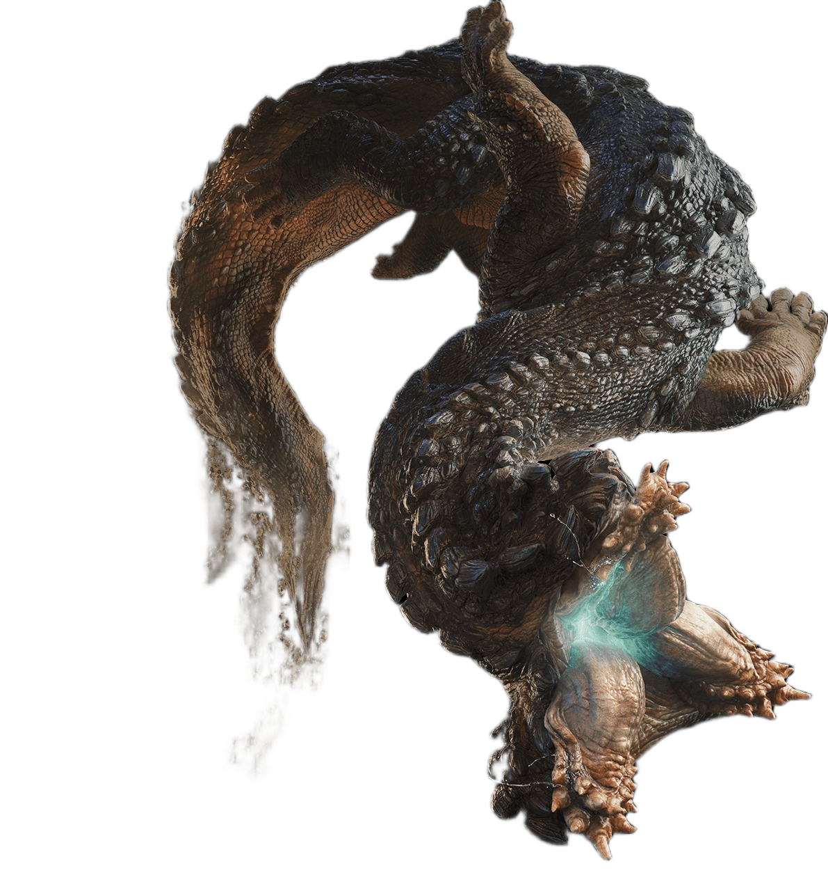
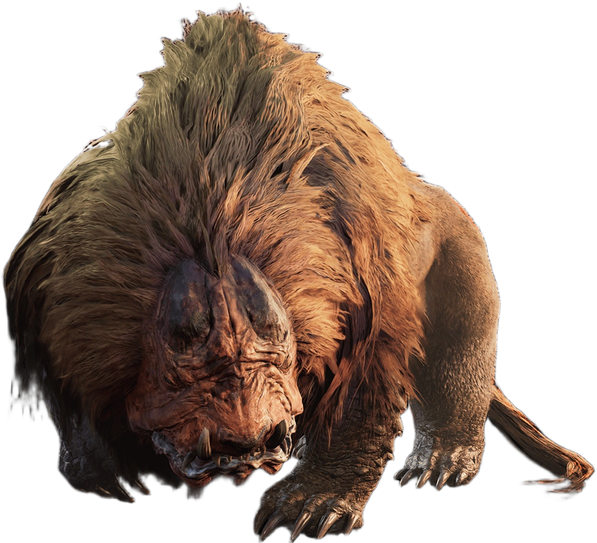
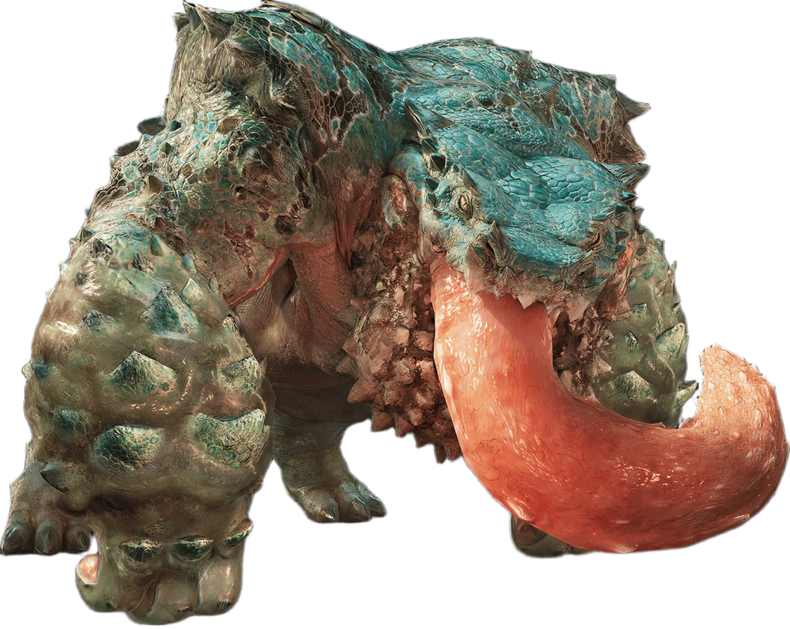

Rey Dau:
"From the look of it... That must be this region's apex predator." A flying wyvern that rules the Windward Plains
as its apex predator. It has adapted to the lightning that accompanies the Sandtide, with most sightings having occured
during the storm. Its ability to discharge electricity in powerful attacks pose a threat to even the most experienced hunters.
Rey Dau:
"From the look of it... That must be this region's apex predator." A flying wyvern that rules the Windward Plains
as its apex predator. It has adapted to the lightning that accompanies the Sandtide, with most sightings having occured
during the storm. Its ability to discharge electricity in powerful attacks pose a threat to even the most experienced hunters.
- Balahara:
Desert-dwelling leviathans that use their supple, serpentine bodies to create quicksand traps for unwary prey.
 Quematrice
Brute wyverns with disproportionately long tails.
They spread a flammable substance, then ignite it by dragging their tails along the ground.
They can often be seen fighting with other, smaller carnivores over carrion.
Quematrice
Brute wyverns with disproportionately long tails.
They spread a flammable substance, then ignite it by dragging their tails along the ground.
They can often be seen fighting with other, smaller carnivores over carrion.
- Doshaguma:
Rugged, territorial fanged beasts that exhibit an aggressive disposition and inhabit a large range.
Sometimes observed in large packs.
- Chatacabra:
A large species of amphibians that use the adhesive quality of their saliva to affix stone
to their forelimbs in order to power up their attacks.
 Arkveld:
A monster known among the Guild as the White Wraith, described as having unique chain-like appendages extending from its
wings. A species long thought to be extinct, its ecology remains shrouded in mystery.
Arkveld:
A monster known among the Guild as the White Wraith, described as having unique chain-like appendages extending from its
wings. A species long thought to be extinct, its ecology remains shrouded in mystery.
 Uth Duna:
"This is its territory. And we're intruders..." A leviathan that rules the Scarlet Forest as its apex predator. It has adpated to water-rich
environments and its sighted most often during the Downpour. It makes use of the moisture and its own bodily fliuds to create a protective
veil around itself.
Uth Duna:
"This is its territory. And we're intruders..." A leviathan that rules the Scarlet Forest as its apex predator. It has adpated to water-rich
environments and its sighted most often during the Downpour. It makes use of the moisture and its own bodily fliuds to create a protective
veil around itself.
 Lala Barina:
A Temnoceran that resides in the Scarlet Forest. Its thorax, which can be opened at will, resembles a rose in bloom.
Lala Barina:
A Temnoceran that resides in the Scarlet Forest. Its thorax, which can be opened at will, resembles a rose in bloom.
 Rompopolo:
A brute wyvern that inhabits areas of deep oilsilt. A brute wyvern that can spray toxic gas from the tip of its tongue
and inject gas into the ground with its tail, causing noxious explosions to well up from underfoot.
Rompopolo:
A brute wyvern that inhabits areas of deep oilsilt. A brute wyvern that can spray toxic gas from the tip of its tongue
and inject gas into the ground with its tail, causing noxious explosions to well up from underfoot.
 Ajarakan:
A fanged beast characterized by the flame-like protrusions that cover its back. A fanged beast that will scrape
its claws against its metal-infused carapace to create a red-hot, molten-like effect. The region's greatest threat becomes
active during the Firespring.
Ajarakan:
A fanged beast characterized by the flame-like protrusions that cover its back. A fanged beast that will scrape
its claws against its metal-infused carapace to create a red-hot, molten-like effect. The region's greatest threat becomes
active during the Firespring.
 Hirabami:
A leviathan that inhabits the Iceshard Cliffs. Razor-sharp claws at its tail and a wind-catching
membrane on its neck allowing it to float makes the Hirabami a uniquely dangerous foe.
Hirabami:
A leviathan that inhabits the Iceshard Cliffs. Razor-sharp claws at its tail and a wind-catching
membrane on its neck allowing it to float makes the Hirabami a uniquely dangerous foe.